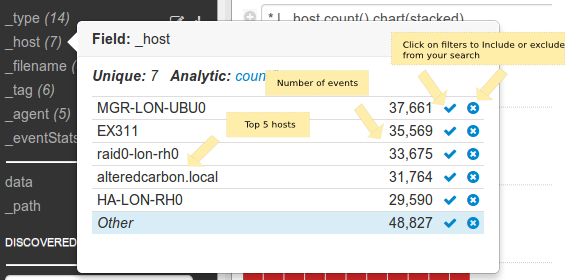
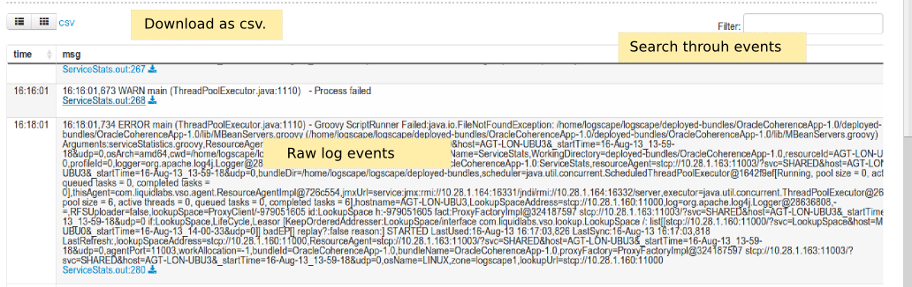
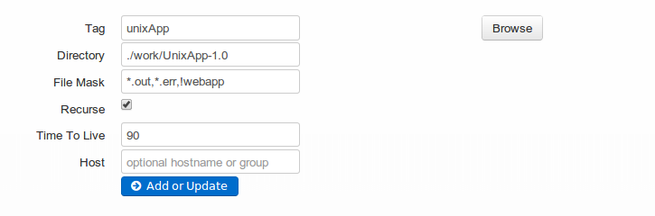

Overview
Installation
Common Deployment Scenarios
Contact
Getting Started
Login
Default credentials: Username: admin , Password: ll4bs

Searching Data
Start searching your data almost immediately. Drive your search and analysis graphically or use the simple search syntax.

The Fields
Click on the fields to gain insight into your data

Navigating Raw Events
When a search executes, the raw events are displayd in a table below the charts. The log events table provides a- a Raw View - Which displays the log data as it appears. There is a link below each event which will open the file that contributed the line
- a Data Type View - This shows the log events in tabular structure determined by a datatype.

Adding Data
You can add a new Data Source from the Configure section. Here is an example Data Source:

In the example above the Datasource UnixApp has been configured to:
- Watch the files in the directory. "./work/UnixApp-1.0"
- Consider only files that match *.out and *.err
- Consider subfolders recursively
- The Time to Live option refers to how many days of logs Logscape will monitor.